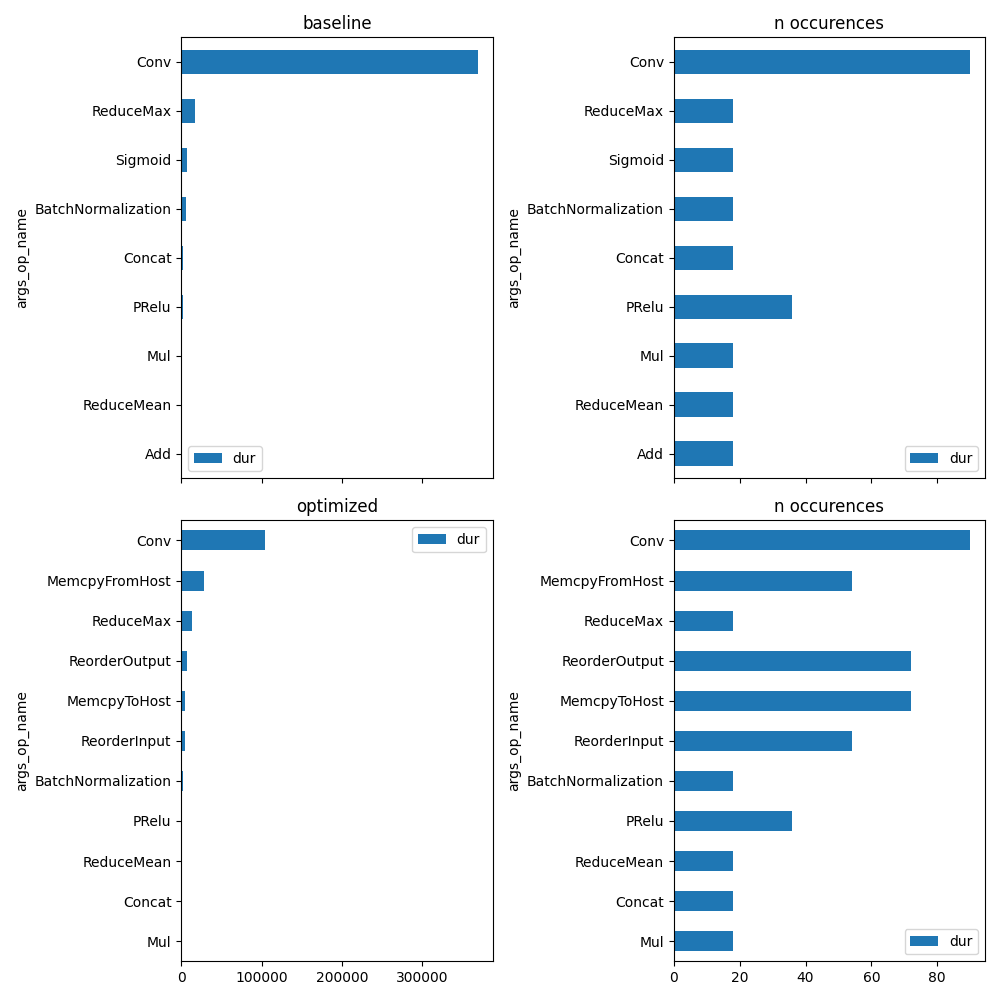
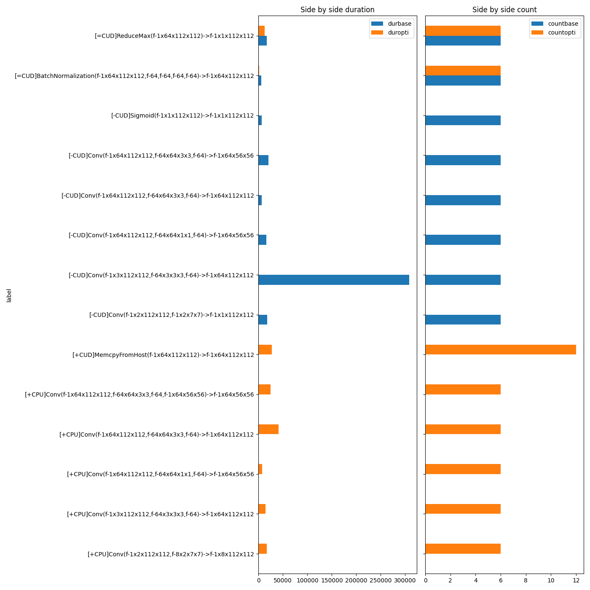

Note
Go to the end to download the full example code.
Profiling with onnxruntime¶
onnxruntime optimizes the onnx graph by default before running the inference. It modifies, fuses or add new operators. Some of them are standard onnx operators, some of them are implemented in onnxruntime (see Supported Operators). This example profiles the two models.
Optimize a model with onnxruntime¶
import os
import numpy
import matplotlib.pyplot as plt
from onnxruntime import get_available_providers
from onnx_array_api.ext_test_case import example_path
from onnx_array_api.ort.ort_optimizers import ort_optimized_model
from onnx_array_api.ort.ort_profile import ort_profile, merge_ort_profile
from onnx_array_api.plotting.stat_plot import plot_ort_profile
suffix = ""
filename = example_path(f"data/small{suffix}.onnx")
optimized = filename + ".optimized.onnx"
print(f"model={filename!r}")
if not os.path.exists(optimized):
ort_optimized_model(filename, output=optimized)
print(f"optimized={optimized!r}")
model='data/small.onnx'
optimized='data/small.onnx.optimized.onnx'
Profiling¶
feeds = {"input": numpy.random.random((1, 3, 112, 112)).astype(numpy.float32)}
prof_base = ort_profile(
filename,
feeds,
repeat=6,
disable_optimization=True,
providers=["CPUExecutionProvider"],
)
prof_base.to_excel(f"prof_base{suffix}.xlsx", index=False)
prof_base
And the optimized model.
And the graph is:
unique_op = set(prof_base["args_op_name"])
fig, ax = plt.subplots(2, 2, figsize=(10, len(unique_op)), sharex="col")
plot_ort_profile(prof_base, ax[0, 0], ax[0, 1], title="baseline")
plot_ort_profile(prof_opti, ax[1, 0], ax[1, 1], title="optimized")
fig.tight_layout()
fig.savefig(f"plot_profiling{suffix}.png")
Merging profiles¶
Let’s try to compare both profiles assuming every iteration process the same image and the input and output size are the same at every iteration.
/home/xadupre/github/onnx-array-api/onnx_array_api/ort/ort_profile.py:260: FutureWarning: The provided callable <function sum at 0x7fc0d2399d80> is currently using SeriesGroupBy.sum. In a future version of pandas, the provided callable will be used directly. To keep current behavior pass the string "sum" instead.
.agg(
/home/xadupre/github/onnx-array-api/onnx_array_api/ort/ort_profile.py:260: FutureWarning: The provided callable <function sum at 0x7fc0d2399d80> is currently using SeriesGroupBy.sum. In a future version of pandas, the provided callable will be used directly. To keep current behavior pass the string "sum" instead.
.agg(
More detailed
gr.to_excel(f"plot_profiling_merged_details{suffix}.xlsx", index=False)
gr
Final plot¶
# let's filter out unsignificant operator.
grmax = gr["durbase"] + gr["duropti"]
total = grmax.sum()
grmax /= total
gr = gr[grmax >= 0.01]
fig, ax = plt.subplots(1, 2, figsize=(14, min(gr.shape[0], 500)), sharey=True)
gr[["durbase", "duropti"]].plot.barh(ax=ax[0])
ax[0].set_title("Side by side duration")
gr = gr.copy()
gr[["countbase", "countopti"]].plot.barh(ax=ax[1])
ax[1].set_title("Side by side count")
fig.tight_layout()
fig.savefig(f"plot_profiling_side_by_side{suffix}.png")
On CUDA¶
if "CUDAExecutionProvider" in get_available_providers():
print("Profiling on CUDA")
prof_base = ort_profile(
filename,
feeds,
repeat=6,
disable_optimization=True,
providers=["CUDAExecutionProvider"],
)
prof_base.to_excel(f"prof_cuda_base{suffix}.xlsx", index=False)
prof_opti = ort_profile(
optimized,
feeds,
repeat=6,
disable_optimization=True,
providers=["CUDAExecutionProvider", "CPUExecutionProvider"],
)
prof_opti.to_excel(f"prof_cuda_opti{suffix}.xlsx", index=False)
unique_op = set(prof_base["args_op_name"])
fig, ax = plt.subplots(2, 2, figsize=(10, len(unique_op)), sharex="col")
plot_ort_profile(prof_base, ax[0, 0], ax[0, 1], title="baseline")
plot_ort_profile(prof_opti, ax[1, 0], ax[1, 1], title="optimized")
fig.tight_layout()
fig.savefig(f"plot_profiling_cuda{suffix}.png")
merge, gr = merge_ort_profile(prof_base, prof_opti)
merge.to_excel(f"plot_profiling_merged{suffix}.xlsx", index=False)
gr.to_excel(f"plot_profiling_merged_details{suffix}.xlsx", index=False)
grmax = gr["durbase"] + gr["duropti"]
total = grmax.sum()
grmax /= total
gr = gr[grmax >= 0.01]
fig, ax = plt.subplots(1, 2, figsize=(14, min(gr.shape[0], 500)), sharey=True)
gr[["durbase", "duropti"]].plot.barh(ax=ax[0])
ax[0].set_title("Side by side duration")
gr = gr.copy()
gr[["countbase", "countopti"]].plot.barh(ax=ax[1])
ax[1].set_title("Side by side count")
fig.tight_layout()
fig.savefig(f"plot_profiling_side_by_side_cuda{suffix}.png")
else:
print(f"CUDA not available in {get_available_providers()}.")
fig, ax = None, None
ax
- 
- 
Profiling on CUDA
/home/xadupre/github/onnx-array-api/onnx_array_api/ort/ort_profile.py:260: FutureWarning: The provided callable <function sum at 0x7fc0d2399d80> is currently using SeriesGroupBy.sum. In a future version of pandas, the provided callable will be used directly. To keep current behavior pass the string "sum" instead.
.agg(
/home/xadupre/github/onnx-array-api/onnx_array_api/ort/ort_profile.py:260: FutureWarning: The provided callable <function sum at 0x7fc0d2399d80> is currently using SeriesGroupBy.sum. In a future version of pandas, the provided callable will be used directly. To keep current behavior pass the string "sum" instead.
.agg(
array([<Axes: title={'center': 'Side by side duration'}, ylabel='label'>,
<Axes: title={'center': 'Side by side count'}, ylabel='label'>],
dtype=object)
Total running time of the script: (0 minutes 6.359 seconds)